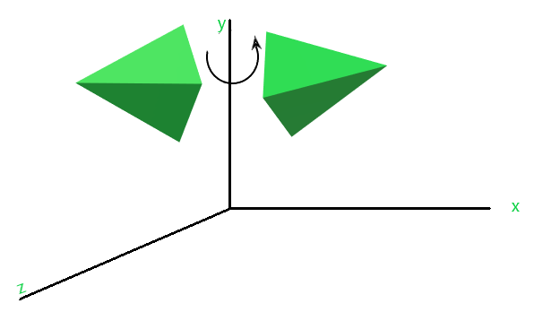

In Computer graphics, 3D Rotation is a process of rotating an object with respect to an angle
in a three-dimensional plane.
There is an arbitrary axis from which you might want to rotate. In order to do that, you need
to make that rotation on a known axis i.e. X-axis, Y-axis, Z-axis.
On rotation about X-axis, the object is rotated parallel to the X-axis. The X-coordinate
remains the same while y and z change.
Consider a point with initial coordinate P(x,y,z) in 3D space is made to rotate parallel to the
principal axis(x-axis). The coordinate position would change to P'(x,y,z).
On rotation about Y-axis, the object is rotated parallel to the Y-axis. The Y-coordinate
remains the same while x and z change.
Consider a point with initial coordinate P(x,y,z) in 3D space is made to rotate parallel to the
principal axis(y-axis). The coordinate position would change to P'(x,y,z).
A rotation transformation matrix is used to calculate the new position coordinate P’, which
shown as below:

On rotation about Z-axis, the object is rotated parallel to the Z-axis. The Z-coordinate
remains the same while x and y change.
Consider a point with initial coordinate P(x,y,z) in 3D space is made to rotate parallel to the
principal axis(z-axis). The coordinate position would change to P'(x,y,z).
A rotation transformation matrix is used to calculate the new position coordinate P’, which
shown as below: